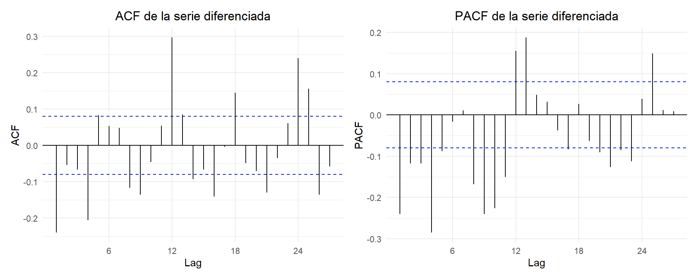

Capítulo: 5 Diferenciación.
Code
## Warning in adf.test(ts_diff1): p-value smaller than printed p-value## Warning in kpss.test(ts_diff1): p-value greater than printed p-valueCode
### Tabla ADF sobre primera diferencia
adf_table <- tibble(
Estadístico_ADF = round(adf_diff$statistic, 4),
Valor_P = round(adf_diff$p.value, 4),
Hipótesis_nula = "La serie NO es estacionaria",
Decisión = ifelse(adf_diff$p.value < 0.05,
"Rechazada: la serie ES estacionaria",
"No rechazada: la serie NO es estacionaria")
)
# Mostrar tabla con kableExtra
kable(adf_table, align = "c", caption = "Prueba ADF sobre primera diferencia") %>%
kable_styling(
bootstrap_options = c("striped", "hover", "condensed", "responsive"),
full_width = FALSE,
position = "center")| Estadístico_ADF | Valor_P | Hipótesis_nula | Decisión |
|---|---|---|---|
| -14.3295 | 0.01 | La serie NO es estacionaria | Rechazada: la serie ES estacionaria |
Code
### Tabla KPSS sobre primera diferencia
kpss_table <- tibble(
Estadístico_KPSS = round(kpss_diff$statistic, 4),
Valor_P = kpss_diff$p.value,
Hipótesis_nula = "La serie ES estacionaria",
Decisión = ifelse(kpss_diff$p.value < 0.05,
"Rechazada: la serie NO es estacionaria",
"No rechazada: la serie ES estacionaria")
)
# Mostrar tabla con kableExtra
kable(kpss_table, align = "c", caption = "Prueba KPSS sobre primera diferencia") %>%
kable_styling(
bootstrap_options = c("striped", "hover", "condensed", "responsive"),
full_width = FALSE,
position = "center")| Estadístico_KPSS | Valor_P | Hipótesis_nula | Decisión |
|---|---|---|---|
| 0.0098 | 0.1 | La serie ES estacionaria | No rechazada: la serie ES estacionaria |
Aplicar arima diferenciacion de primer orden.
5.1 ACF y PACF
Code
library(ggplot2)
library(forecast)
library(patchwork)
p1 <- ggAcf(ts_diff1) +
theme_minimal() +
ggtitle("ACF de la serie diferenciada") +
theme(plot.title = element_text(hjust = 0.5))
p2 <- ggPacf(ts_diff1) +
theme_minimal() +
ggtitle("PACF de la serie diferenciada") +
theme(plot.title = element_text(hjust = 0.5))
p1 + p2 + plot_layout(widths = c(1.5, 1.5))
5.2 Ajuste del modelo arima :
Code
## Series: ts_mensual
## ARIMA(2,1,1)(2,0,0)[12]
##
## Coefficients:
## ar1 ar2 ma1 sar1 sar2
## 0.4517 0.2583 -0.9884 0.3165 0.2267
## s.e. 0.0406 0.0424 0.0059 0.0404 0.0419
##
## sigma^2 = 0.1513: log likelihood = -285.82
## AIC=583.65 AICc=583.79 BIC=610.06
##
## Training set error measures:
## ME RMSE MAE MPE MAPE MASE
## Training set 0.02932352 0.387005 0.2941109 0.1413283 2.187546 0.6344701
## ACF1
## Training set -0.02793378